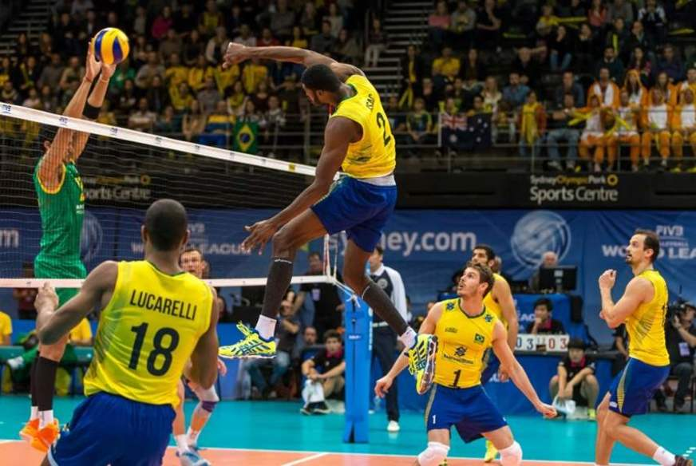

"A natação é a prática de deslocamento na água por meio de movimentos corporais, principalmente com o uso dos braços e pernas. Os estilos de nados são divididos em: crawl, peito, costas e borboleta. Ao longo do tempo, a humanidade construiu uma relação muito próxima com a água, devido à grande disponibilidade do recurso. O meio aquático passou então a ser amplamente utilizado para fins de sobrevivência, lazer, deslocamento e, com a esportivização da natação, como espaço de treinamento e de espetáculo. A movimentação do corpo na água desenvolve capacidades físicas como o condicionamento cardiorrespiratório, coordenação motora e resistência muscular. Nesse sentido, a natação é considerada um dos exercícios físicos mais completos. Além de praticada enquanto esporte, a modalidade também é realizada como atividade recreativa por pessoas de diferentes idades que buscam melhorar a saúde corporal ou ter momentos de lazer." Veja mais sobre "Natação" em: BRASIL ESCOLA - NATAÇÃO
Deve-se importar sempre neste esporte fazer o aquecimento fora da piscina, com alongamentos e dentro da piscina com atividade moderada, para preparar os músculos para a execução dos movimentos de forma mais intensa
"O vôlei ou voleibol é um esporte coletivo praticado em uma quadra dividida por uma rede. Duas equipes disputam a partida com o objetivo de tocar a bola no campo adversário, a qual deve ser arremessada por cima da rede. O esporte é um dos mais populares no Brasil e no mundo em termos de praticantes e audiência. Tanto a Seleção Brasileira Feminina de Vôlei quanto a Masculina conquistaram diversos títulos, incluindo medalhas nas Olimpíadas e no campeonato mundial. Além da modalidade tradicional na quadra, o vôlei conta com outras versões, tais como o vôlei de praia, o vôlei sentado, praticado por pessoas com deficiência, e o futevôlei." Veja mais sobre "Vôlei" em: BRASIL ESCOLA - VÔLEI
Deve-se importar sempre neste esporte fazer o aquecimento em quadra com o alongamento dos músculos e articulações de membros inferiores e superiores, tais como: tornozelos, tendões, coxas, quadril, punhos, cotovelos, ombros e pescoço.
